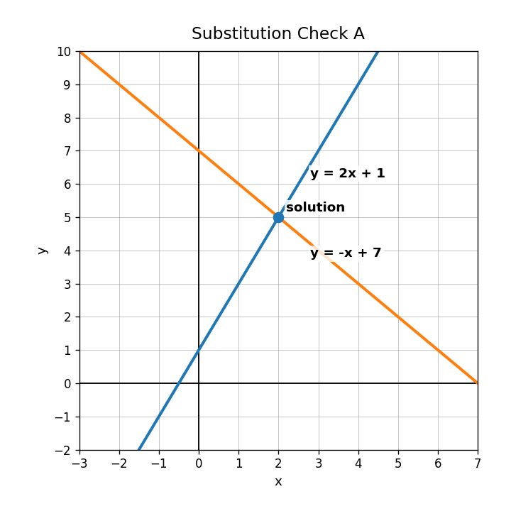
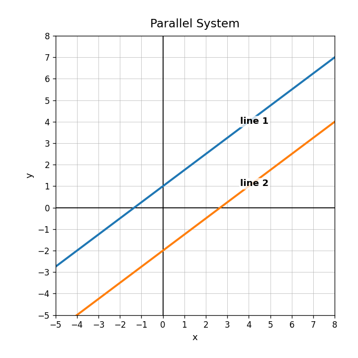
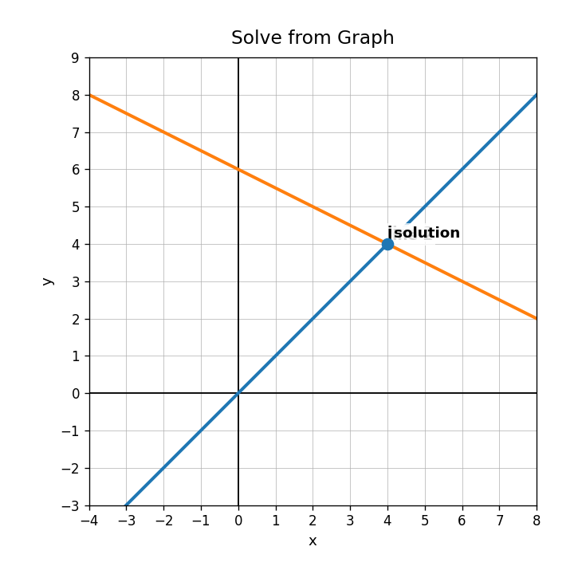

Practice Set 3.2.1
If $y=2x+1$, what expression should replace $y$ in the equation $y=-x+7$?
Check whether $(2,5)$ satisfies both equations: $y=2x+1$ and $y=-x+7$.
Solve the system using substitution.
$$y=x+4$$
$$y=3x-2$$
The graph shows the same system from the previous style of problem. Identify the solution and explain why substitution and graphing should agree.

On a graph, what does the intersection point of two lines represent?
What solution type is shown by two parallel lines?

Determine whether $(4,4)$ is on both lines shown in the graph.

Which variable would be easiest to eliminate in this system?
$$x+y=9$$
$$x-y=1$$
Use the graph to identify the solution of the system.
Solve using elimination.
$$x+y=12$$
$$x-y=4$$
Use the graph of the parallel system to explain why there is no solution.
Create a system of two equations that has the solution $(3,6)$. Explain how you know.
Describe the association shown in the scatterplot.

For the model $S=3.4h+62$, what does the slope mean?
Use $S=3.4h+62$ to estimate the score after 5 hours of practice.
A model predicts 80, but the actual value is 83. Find the residual and say whether the point is above or below the model.